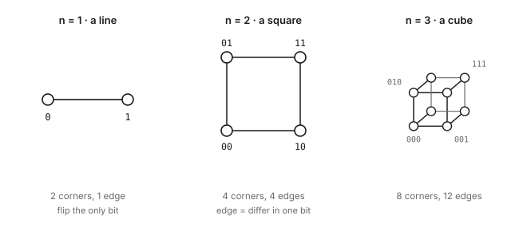
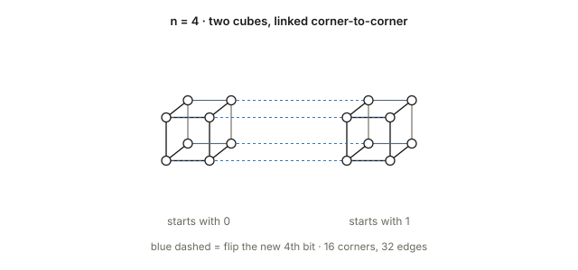
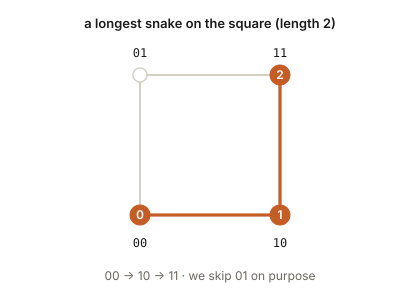
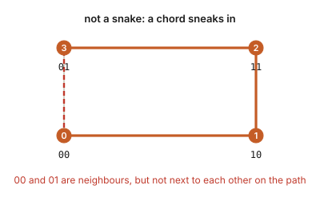
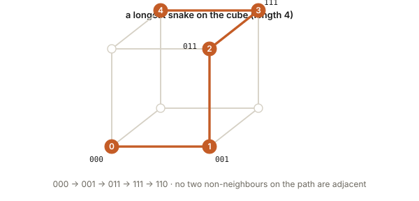
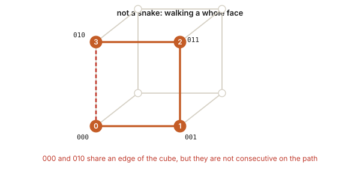

There is a puzzle that has been open for almost seventy years, about drawing the longest possible “snake” inside a cube that lives in more and more dimensions. It sounds like a game. It is also a real research problem, and people still break records on it. This note is just the problem itself, explained from zero.
cubes, but higher
Start with a line segment. It has two endpoints. Call those endpoints 0 and 1. That is a 1-dimensional cube.
Take two copies of that line and connect matching ends. You get a square: four corners. Label each corner with two bits, one for “left/right” and one for “bottom/top”. Neighbouring corners differ in exactly one bit.
Do it again: take two squares and connect matching corners. You get an ordinary cube, eight corners, each labelled with three bits.

Once more and you get a 4-dimensional cube (a tesseract): sixteen corners, each a string of four bits. You can picture it as two ordinary cubes, with every corner of the first joined to the matching corner of the second.

In general, the n-dimensional hypercube has a corner for every binary string of length n, so 2n corners, and an edge between any two strings that differ in exactly one position. So a 10-dimensional hypercube already has 1,024 corners; a 20-dimensional one has about a million.
what is a snake?
A snake is a path that walks from corner to corner along the edges, with one extra rule:
no two corners on the path are allowed to be neighbours, unless they are next to each other on the path.
In other words: the snake cannot “see” itself across a shortcut. If you have already visited a corner, you may not later step on anything adjacent to it, except by continuing from the tip. The length of a snake is the number of steps (edges) it takes.
On the square the longest possible snake has length 2. Here is one:

If we try to keep going around the square, we break the rule:

On the ordinary cube the longest snake has length 4. One example:

Walk a whole face of the cube instead, and you get the same failure as on the square:

the question
For each dimension n, what is the length of the longest possible snake in the n-cube?
That number is usually written a(n). We know it exactly only up to n = 8. From n = 9 onwards we only know lower bounds: “we have found a snake this long, and maybe a longer one exists.”
| dimension n | longest snake | |
|---|---|---|
| 1 | 1 | exact |
| 2 | 2 | exact |
| 3 | 4 | exact |
| 4 | 7 | exact |
| 5 | 13 | exact |
| 6 | 26 | exact |
| 7 | 50 | exact |
| 8 | 98 | exact |
| 9 | ≥ 191 | record |
| 10 | ≥ 379 | record |
| 11 | ≥ 750 | record |
| 12 | ≥ 1480 | record |
| 13 | ≥ 2946 | record |
why it is hard
The n-cube has 2n corners. At every step of a snake the next move has to be a bit-flip that does not land on, or next to, any corner you already used (except the current tip). The number of paths to check grows brutally with n. Exhaustive computer search has settled n ≤ 8; past that, people invent clever searches and constructions, and the record table above is the best anyone has published so far.
A quick sense of scale: the 8-cube has 256 corners and the longest snake takes 98 steps. The 13-cube has 8,192 corners, and the best known snake takes 2,946 steps. Nobody knows if that is optimal.
why people care
Kautz introduced the problem in 1958 while studying codes that can detect a single-bit error. The idea, roughly: list the codewords in the order of a snake. Because consecutive codewords differ by one bit, and non-consecutive ones differ by at least two, a single flipped bit in transmission either lands on the next codeword or on something that is not a codeword at all — so you notice. Longer snakes give longer such codes. The same objects show up in a few other corners of coding and digital communication; for this note, the puzzle on its own is enough.
Next: how a Caltech Math-AI group used reinforcement learning (a method they call Beam Anchor) to push several of the records above.